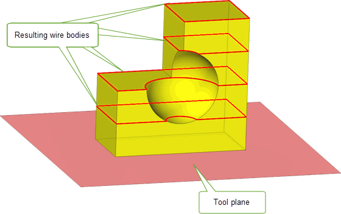
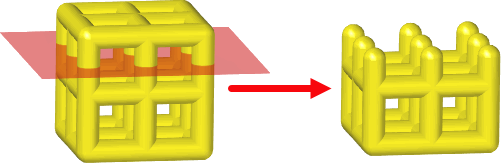

| |
Sectioning |
| <<< Instancing And Patterning | Chapters | Intersections >>> |
This chapter explains how you section bodies using the sectioning operations available within Parasolid, and also how to clip lattices using a set of clipping entities. The sectioning functions support sectioning with surfaces (planar or cylindrical) or sheet bodies.
The sectioning operation is similar to the boolean subtract operation, except the functions receive slightly different options and return more section-related information. Apart from these differences, the rules regarding tag persistence are identical to that of the boolean operation.
Parasolid supports both global and local sectioning operations. These are described in the rest of this chapter.
|
Note: This functionality offers partial support for facet geometry. |
Like global and local booleans, global and local sectioning can automatically look for regions between the target and tool that are nearly coincident to aid the sectioning operation. See Section 52.4.5, “Matched topology in local and global boolean operations”, for complete details.
The lattice clipping operation is similar to a sectioning operation and will return one or more new lattices that represent the portions of the supplied lattice that lie on the relevant side of the supplied clipping entities.
A global section is characterized by the comparison of all face pairs from the target and section entities. These section operations are supported by the PK_BODY_section_with_sheet_2 and PK_BODY_section_with_surf functions which require one target body, one tool entity and an options structure.
PK_BODY_section_with_surf supports sectioning a body with a planar or cylindrical surface. The target body to be sectioned can be either a solid or sheet body. The effect is the same as subtracting a sheet tool with the same infinite surface.
This function receives an options structure that contains an option to specify whether resulting bodies in front of the sectioning tool, behind the sectioning surface or both should be returned by the function.
If generalised topology is enabled, then the target may be a general body. In cases where a general body cannot be successfully sectioned, error information is saved in a Parasolid Report. See the documentation for PK_BODY_section_with_surf for more details.
PK_BODY_section_with_sheet_2 supports sectioning a body with a sheet tool. The target body to be sectioned can be either a solid or sheet body. The tool may be disjoint.
After modifying the target body the sectioning sheet tool is deleted.
PK_BODY_section_with_sheet_2 receives an options structure which contains an option to specify whether result bodies in front of the sectioning tool, behind the sectioning tool or both should be returned by the function.
If generalised topology is enabled, then the target and the result body (or bodies) can be general but the tool body must be manifold.If it is not possible to classify the result body as being in front of or behind the sectioning tool, then a Parasolid Report of type PK_REPORT_record_1_t is generated.
See the documentation for PK_BODY_section_with_sheet_2 for more details.
See Chapter 11, “Using Reports”, for more information about the Parasolid Report mechanism.
A local sectioning operation is characterized by the comparison of selected face pairs in the target and section bodies. This form of section is quicker than a global section but does not guarantee topological consistency on the resulting bodies.
This sectioning operation is supported by the PK_FACE_section_with_sheet_2 function, which requires one or more faces from the target and section bodies and an options structure.
PK_FACE_section_with_sheet_2 supports sectioning particular faces of a target body with faces of a sheet body. The target body to be sectioned can be either a solid or sheet body. This function does not support generalised topology. It is similar to PK_FACE_boolean_2 in that it supports partial sectioning of bodies.
PK_FACE_section_with_sheet_2 receives an options structure similar to that of PK_FACE_boolean_2 and includes the option to specify whether resulting bodies in front of the sectioning tool, behind the sectioning tool or both should be returned by the function. The options structure also has the facility for the user to specify matched topology in the same way as for boolean operations.
The behaviour of the sectioning functions, PK_BODY_section_with_sheet_2 (global), PK_BODY_section_with_surf (global) and PK_FACE_section_with_sheet_2 (local) is altered using options passed to these functions. The options structures for these functions are different, but overlap with respect to a number of options. The options are as follows:
|
Determines which bodies, front and/or back, are returned when performing a section operation. |
|
|
Merge all mergeable imprinted edges created and/or located by the section operation. Note, mergeable edges which are adjacent to the new section faces are not merged. |
|
|
Merge all mergeable imprinted edges created by the section operation, including edges adjacent to the new section faces. |
|
|
Avoid merging imprinted edges that existed and were mergeable before the start of the section operation. |
|
|
Checks faces involved in the section operation. Only faces which are adjacent to imprinted edges are checked |
|
|
The default tolerance to which the section operation, if it has to, may approximate entities or assume that entities are coincident. |
|
|
The maximum tolerance which may be applied to any entity involved in the section operation. |
|
|
Whether or not tracking information for imprinted edges and for vertices imprinted on wireframe edges on the target body is returned in the |
|
|
A local boolean receives a subset of the faces of a target and/or a tool body. If the imprinting phase of the boolean results in incomplete loops of imprinted edges, then additional target and/or tool faces are used. |
|
|
This option sub-structure is used to identify regions of the tool to be included or excluded in the boolean result. See Section 52.4.2, “Selecting regions in local booleans” for a description of the options. |
|
|
This option sub-structure describes matched regions between the target and tool bodies. See Section 52.4.5, “Matched topology in local and global boolean operations”, for a description of the options. |
|
|
Control which edge survives when a target edge and tool edge coincide during a section operation. This can be one of:
If both faces adjacent to the tool edge survive, then the tool edge survives, regardless of the value of this option. If generalised topology is on, the target edge always survives. |
|
|
Controls whether to return a resulting body containing facet geometry only, or a mixture of classic and facet geometry. See Section 85.6, “Creating a mixture of facet and classic geometry”, for more information. |
The
fence
option controls which regions of the target entities are returned.
Sectioning solid with sheet using the
both
fence option
Figure 56-1 Sectioning solid using the
both
fence option
Using the
both
fence option, all regions (in front and behind the sheet body are returned); i.e., three front bodies, one back body, three front faces and three back faces.
Sectioning solid with sheet using the
front
fence option
Figure 56-2 Sectioning solid using the
front
fence option
Using the
front
fence option, only regions in front of the sheet body are returned; i.e., three front bodies and three front faces.
Sectioning solid with sheet using the
back
fence option
Figure 56-3 Sectioning solid using the
back
fence option
Using the
back
fence option, only regions behind the sheet body are returned; i.e., one back body and three back faces.
Local section with two excluded regions and fence =
back
Figure 56-4 Merge options in sectioning operations
Using the sectioning functions may break the geometry sharing by splitting a body into two with the result that there are faces on each body that used to share a common surface. Similarly, the functions may also create geometry sharing of the section surface in one of the bodies, and the sharing of a copy of it in the other body.
The global and local sectioning operations described in Section 56.2, Section 56.3, and Section 56.4 all operate directly on the target body, either destroying it completely or splitting it up into several components and returning only the components requested.
Parasolid also offers support for non-destructive sectioning, where the target entities supplied to Parasolid are left unchanged. You can perform non-destructive sectioning using any of the following functions:
All of these functions take the following options:
tracking |
Whether or not to return tracking information that relates new edges created in the tool body to their originating faces in the target body. Default: PK_LOGICAL_false. |
allow_disjoint |
Whether or not to allow disjoint bodies to be returned.
This behaviour occurs regardless of whether a tool body is disjoint when passed into the function. For example, if a disjoint tool body is passed in, and |
keep_as_facet |
Controls whether to return a resulting body containing facet geometry only, or a mixture of classic and facet geometry. See Section 85.6, “Creating a mixture of facet and classic geometry”, for more information. Default: PK_BODY_keep_as_facet_yes_c. Note: This field is ignored if the target entities contain classic geometry. This field is ignored in calls to PK_BODY_make_section. |
PK_BODY_make_section and PK_BODY_make_section_with_surfs also take the following options:
default_tol |
The default tolerance to which the boolean operation may approximate entities or assume that entities are coincident to. Default: 1.0e-5. See the PK Reference documentation for PK_BODY_make_section_t for more information. Note: This field is used by PK_BODY_make_section_with_surfs only. |
max_tol |
The maximum tolerance which may be applied to any entity involved in the boolean operation. By default, it is set to 0.0. If it is not set to the default, then it must be set to a value that is greater than that of See the PK Reference documentation for PK_BODY_make_section_t for more information. Note: This field is used by PK_BODY_make_section_with_surfs only. |
result_body_type |
Whether tool bodies should be returned as sheet bodies or wire bodies (by deleting the faces from the returned sheet bodies). Default: PK_BODY_type_sheet_c. |
update |
Update switch to maintain consistency when rebuilding models built in earlier versions of Parasolid (Default: PK_boolean_update_default_c). See Section 52.4.19, “Update control”, for more information. |
n_offsets offsets |
For slicing operations, the number of offsets to be applied to the supplied tool plane and the offset distances themselves. (Default: 0, NULL.) See Section 56.5.1, “Creating planar sections at multiple offsets” for more information. Note: This field is used by PK_BODY_make_section_with_surfs only. |
banned_classes |
For slicing operations, an array of classes of curves that cannot appear in the resultant wire bodies. (Default: 0, NULL.) See Section 56.5.1, “Creating planar sections at multiple offsets” for more information. Note: This field is used by PK_BODY_make_section_with_surfs only. |
PK_FACE_make_sect_with_sfs differs from PK_BODY_make_section and PK_BODY_make_section_with_surfs in that it takes a set of target faces (rather than bodies) and tool surfaces as input and computes intersections between those faces and surfaces. The result is a set of imprinted edges that forms one or more wire bodies. These edges may or may not form a closed loop, depending on the input faces used. If you want to ensure that the returned edges always form a closed loop (regardless of the input faces used), you should set the
extend_face_list
field (described below) in the options structure to PK_LOGICAL_true; this will enable Parasolid to use additional target faces in order to return closed loops of edges.
|
Note: PK_FACE_make_sect_with_sfs
never returns sheet bodies, even when the imprinted edges form a closed loop; the resulting bodies are always wire bodies. |
Figure 56-5 shows an example of local sectioning using PK_FACE_make_sect_with_sfs, illustrating the effect of
extend_face_list
.
|
Whether to use additional target faces to obtain a closed loop of imprinted edges. |
Figure 56-5 Sectioning a body using target faces and surfaces
The n_offsets, offsets and banned_classes options in PK_BODY_make_section_with_surfs allow you to create wire body sections from a single tool plane and an array of offset distances. Parasolid will generate a section for each offset value. Offset values can be positive or negative, and a value of zero will produce a section that is coincident with the tool plane. This functionality offers improved performance over sectioning with multiple tool planes, and can be useful for creating sections in Additive Manufacturing workflows in which models are sliced in preparation for printing,
Figure 56-6 shows an example in which a target body has been sectioned using a tool plane and an offsets array containing four non-zero values.
Figure 56-6 Sectioning a body using a tool plane and four non-zero offset values
The banned_classes option allows you to specify classes of curve that should not appear in the resulting wire bodies. When used, any resulting curves that are of a banned class are converted to polylines. This option could be used if your application (or others in the full workflow) cannot support certain classes of curve.
You can clip a lattice using either a single surface or one or more faces with PK_LATTICE_clip. Any faces must be from bodies which are manifold and not disjoint. This function returns one or more lattices representing the portion of the input lattice that lies on the specified side of the clipping entities. The original lattice and the set of clipping entities are left unchanged.
This functionality allows you to trim Parasolid lattices so that they match the shape of a model, as shown in Figure 56-7
A lattice is clipped at the intersections of the centre lines of its lrods with the supplied clipping entities. A new lball will be created at the end of each clipped lrod, to close the lattice.
The result of a call to PK_LATTICE_clip is a set of lattices with information on their validity and, optionally, on the set of lballs that were created at the ends of any clipped lrods, and on any lballs that were incident with one or more clipping entities.
Figure 56-7 Clipping a lattice using a plane as the clipping entity
PK_LATTICE_clip receives a lattice and an options structure, which contains the following options:
|
An array of clipping entities which must be either a single surface or one or more faces from bodies which are manifold and not disjoint. |
|
|
A parallel array of flags that indicate which side of the corresponding entry in |
|
|
Controls the behaviour of lrods that are clipped during the operation. See Section 56.6.4, “Controlling the behaviour of clipped ltopology”, for more information. Default: PK_LROD_clip_keep_connected_c. |
|
|
Controls the minimum length for an lrod to survive. See Section 56.6.4, “Controlling the behaviour of clipped ltopology”, for more information. |
|
|
Controls whether lrods that are coincident with the clipping entities survive after a clipping operation. See Section 56.6.4.1, “Controlling the behaviour of ltopologies that are coincident with a clip entity”, for more information. Default: PK_LROD_coi_keep_connected_c |
|
|
Controls the radius of any new lballs that are created during the operation. See Section 56.6.4, “Controlling the behaviour of clipped ltopology”, for more information. Default: PK_LBALL_radius_interpolate_c. |
|
|
Controls whether to return information about lballs that were affected by the clipping operation. See Section 56.6.5, “Controlling returned information”, for more information. |
|
|
Controls whether duplicate ltopologies created by the clipping operation should be merged. See Section 56.6.4.2, “Merging duplicate ltopologies when clipping lattices”, for more information. Default: PK_LTOPOL_dup_merge_no_c |
|
|
The tolerance used to merge duplicate ltopologies when |
|
|
Whether each resultant lattice is graph-connected (i.e any lball can be reached from any other lball by stepping between lballs that are connected by an lrod). It has the following values:
|
The function returns the following arguments:
|
An array of |
The
fence
option in PK_LATTICE_clip allows you to specify whether lattice topology (ltopology) in front or behind each of the clipping entities should survive the operation. An ltopology is considered to be in front of a clipping entity if the entity’s normal points towards the ltopology, and behind the clipping entity if the ltopology lies in the direction opposite to the entity’s normal.
A
fence
token should be supplied for each of the clipping entities. The token may take one of the following values:
|
Note: All clipping entities from the same body should have the same fence value. |
Figure 56-8 demonstrates the effect of the
fence
option when clipping a simple cube lattice using a planar face. In this figure, clipped lrods are retained in each of the results, and new lballs created by the operation are highlighted in blue.
Figure 56-8 Illustrates the effect of the
fence
option when clipping a cube lattice with a planar face.
Clipping entities act on the centre lines of the lattice’s lrods rather than on the volume of the lattice. Therefore, the
fence
option takes effect at the position where the clip entity intersects the axis of each lrod. This is illustrated in
Figure 56-9, which shows two examples of a dumbbell lattice that forms a shallow angle of intersection with the supplied clip entity. The
fence
option is set so that ltopology will survive if it is below the clip entity in the figure.
Figure 56-9 Demonstrates how clip entities clip the axes of the lattice’s lrods.
When ltopology lies coincident with a clip entity this is treated as a special case. See Section 56.6.4.1, “Controlling the behaviour of ltopologies that are coincident with a clip entity”, for more information.
The behaviour of ltopology that interacts with a clipping entity is controlled by the
lrod_clip
,
lrod_min_length
,
lball_radius
and
lrod_coi
options.
The
lrod_clip
and
lrod_min_length
options work in collaboration and determine whether an lrod that interacts with the clipping entities should survive the operation. Primary control over the survival of lrods is given by the
lrod_clip
option, which can take the following values:
Figure 56-10 shows the different results that can be obtained through varying the
lrod_clip
control. In this figure, the
fence
option has been set to PK_clip_fence_front_c, and new lballs created by the operation are highlighted in blue.
The
lrod_min_length
option allows you to specify a minimum length value for the surviving portions of lrods when
lrod_clip
is set to PK_LROD_clip_keep_connected_c or PK_LROD_clip_keep_c. If you supply a non-zero
lrod_min_length
clipped lrods will be retained if their length is greater than or equal to this value.
Figure 56-10 The effect of the
lrod_clip
option when clipping a lattice with two faces.
When an lrod is clipped and retained in the result, Parasolid will create a new lball to cap the open end of the lrod. The size of this lball is controlled by the
lball_radius
option. The radii of any new lballs can either be linearly interpolated from the radii of the original lballs, or set to the radius of the lrod at the clipping point.
|
Note: As all clipped lrods must be capped with a new lball, unavoidable self-intersections can sometimes occur in the resulting lattice(s) where, for example, a new lball clashes with its lrod-adjacent lball. Any clashing ltopologies in the result are reported to the application. See Section 56.6.6, “Returned information on clipped lattices”, for more information. |
When ltopology lies coincident with a clip entity this is treated as a special case. If the axis of an lrod lies coincident with a clip entity, the
lrod_coi
option can be used to determine whether the lrod survives the operation. It has the following values:
If an lball’s centre lies on a clip entity, its survival depends on the values of the
lrod_coi
option. If it survives, the lball will be marked as touched. See Section 56.6.6, “Returned information on clipped lattices”, for more information on touched lballs
Figure 56-11 shows an example where a planar clip entity is coincident with the axis of an lrod in a lattice. In both results the
lrod_coi
option is set to PK_LROD_coi_keep_all_c, and the coincident lrod is retained. The result lballs that are touched by the clip entity are highlighted in orange.
Figure 56-11 Clipping a lattice with a clip entity that lies coincident with an lrod of the lattice.
Figure 56-12 shows the different results that can be obtained through varying the
lrod_coi
control. The result lballs that are touched by the clip entity are highlighted in orange.
Figure 56-12 The effect of the
lrod_coi
option when clipping a lattice
When clipping lattices you can choose to merge any duplicate ltopologies created as a result of the clipping operation using the
merge_duplicates
and
duplicate_tolerance
options.
When
merge_duplicates
is set to PK_LTOPOL_dup_merge_yes_c, lballs created as a result of the clipping operation are merged with other lballs whose position, radius and
lball_lrod_radius
are within the tolerance supplied in
duplicate_tolerance
.
|
Note: Lballs will only be merged if at least one of them was created by the clip operation. |
Figure 56-13 demonstrates a clip operation on a lattice where duplicate ltopologies are merged. In this example, the
fence
option is set to PK_clip_fence_back_c and
merge_duplicate
is set to PK_LTOPOL_dup_merge_yes_c.
Figure 56-13 The effect of the
merge_duplicate
option when clipping a lattice
If your application needs to return detailed information to the user on the ltopology that was affected by the clipping operation, you can use the
want_clipped_lballs
option to request that an array of affected lballs is returned for each result lattice.
PK_LATTICE_clip returns an array of structures containing information on the lattices that were created during the operation. Each structure contains the following fields:
|
The number of |
|
|
The ltopologies in the lattice that clash with other ltopologies |
|
|
The length of the |
|
|
The lballs in the resulting lattice that were affected by the clipping operation |
|
|
A parallel array of tokens giving information on how the corresponding lball in the
|
| <<< Instancing And Patterning | Chapters | Intersections >>> |